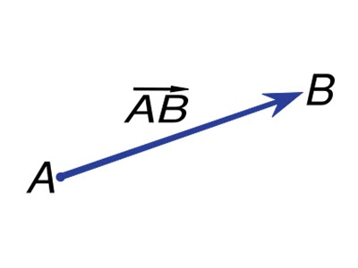
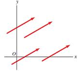
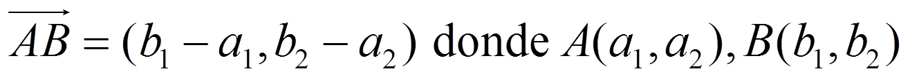
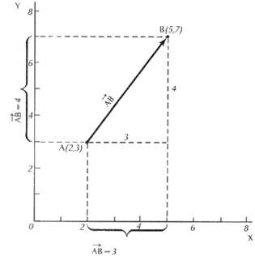
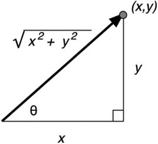
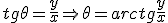
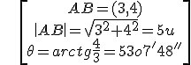

Geometría analítica
Vectores
Un vector es un segmento orientado. Lo representamos AB, donde A es su origen y B su extremo.
Las características de un vector son:
– Módulo, |AB| : la longitud del segmento
– Dirección: la dirección de la recta que la contiene y de sus paralelas
– Sentido: el que va del origen al extremo

El conjunto de vectores con el mismo módulo, dirección y sentido (vectores equipolentes) se llama vector libre. El vector de este conjunto que tiene su origen en O y su extremo en el punto P se llama vector de posición del punto P.

Las coordenadas del vector son:


Calculamos el módulo de un vector por el Teorema de Pitágoras:

El ángulo que describe la dirección del vector se llama argumento:

Ejemplo:

Ejercicio. Si u(3,-2), A(1,t), B(-3,3):
a) Calcula el módulo y el argumento de u.
b) Calcula t, si AB(-4,-2).
Soluciones: a)|u|= √13; θ = 146º18'36''; b) 5
Obra publicada con Licencia Creative Commons Reconocimiento No comercial Compartir igual 4.0